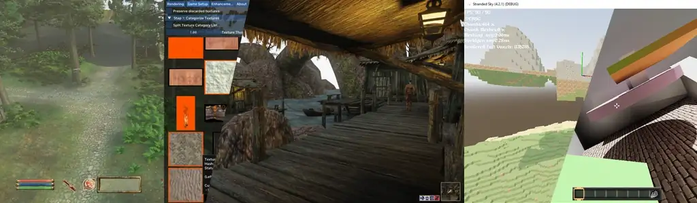
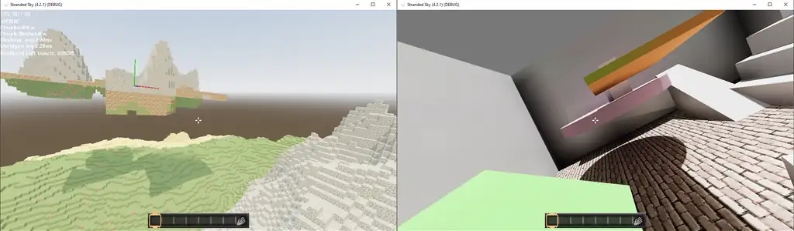
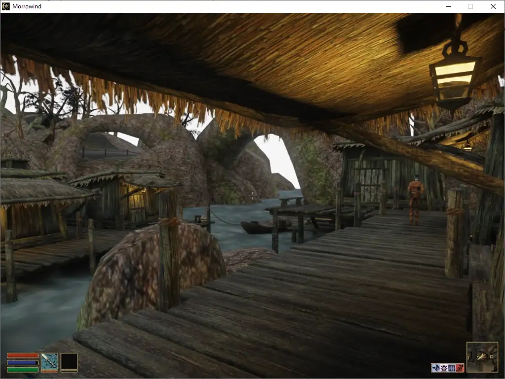

My alias is WeRideForCoffee, and welcome to my personal site!
Here you will find a cross-section of my passions and creations, you can expect a wide variety of articles, tutorials, more personal blog posts and musings, videos, video game development and the occasional free treat be it a custom model for 3D printing through to source code I've put together for our shared benefit.
- Video game development and creation, both shorter form Game Jam or personal experiments and on major titles I've been working on and cannot wait to share with you!
- Application development, especially with a focus on creative and productive tools.
- Historical European Martial Arts, HEMA for short. Sword fighting based on historical records and manuals, practiced and developed as a martial art... and tremendous fun!
- Occasional game play footage and series, with a focus on creating broader narratives through game play and the video game modding scene overall.
 WeRideForCoffee on YouTube
WeRideForCoffee on YouTubeThis is hardly an exhaustive list, but to whet your appetite please enjoy a *sneak peak* at a few of my major projects currently underway:
Stranded Sky - Multiplayer Voxel Sandbox:
My take on the voxel sandbox complete with physics-driven floating islands, movement and vehicles, extensive modding support built into the foundations and enhanced graphical capabilities as the cherry on top.
My current efforts are still focused on building a stable mechanical foundation for the game in what precious time I can put aside for it, but any and all updates will be posted here!
Custom HEMA Gauntlets
Frustrated by the lack of options in Australia, and brutal overseas shipping and currency conversion costs I have been developing 5-finger articulated armoured gauntlets for use with sword fighting, with a focus on providing both excellent protection and the capability to provide entirely custom sizing.
For the time being, I don't have any compelling sizzle-reel screenshots for this project, but of the three projects presented here this is the one I'll be focusing on next, so stay tuned!
RTX Remix Modding - Morrowind, Oblivion, Fallout 3 and Fallout New Vegas
Driven by my passion for gaming and modding, I have been working to integrate NVIDIA's RTX Remix fully path traced renderer with many classic games from the early and mid 2000s, including every Bethesda Softworks title from (and including) Morrowind all the way to technically supporting the original version of Skyrim!
To showcase this, I'm considering putting together a narrative driven video series centered on the Fallout New Vegas DLC Dead Money... and I think it will be something special, but you'll have to stick around to find out.
